Week1 to Week10
Week1 to Week2
1.下載python3.7.2。
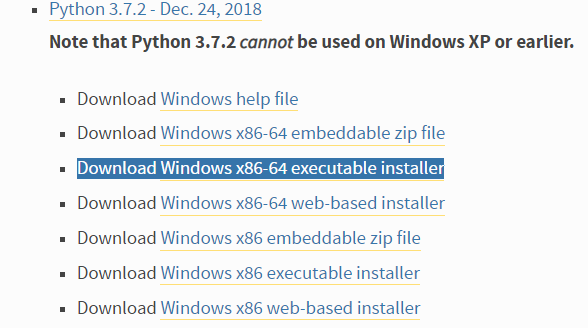
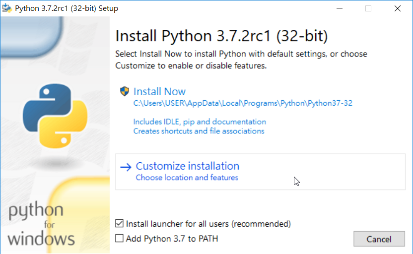
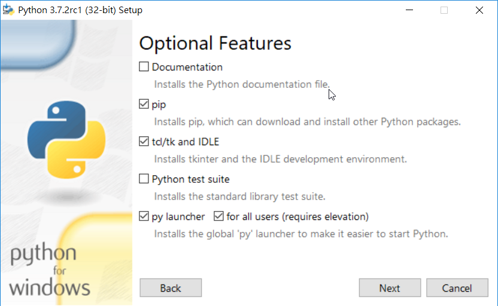
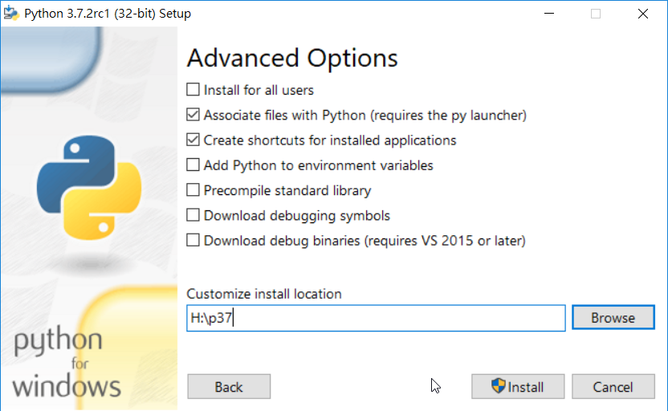
2.下載HxD二維編輯器。
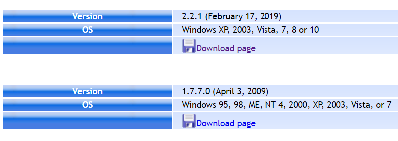
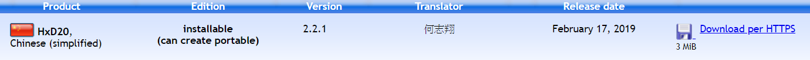
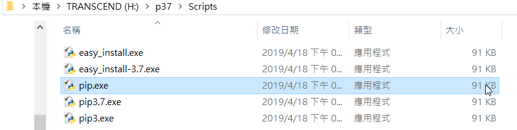
3.修改home的位置，查到p37進行修改。
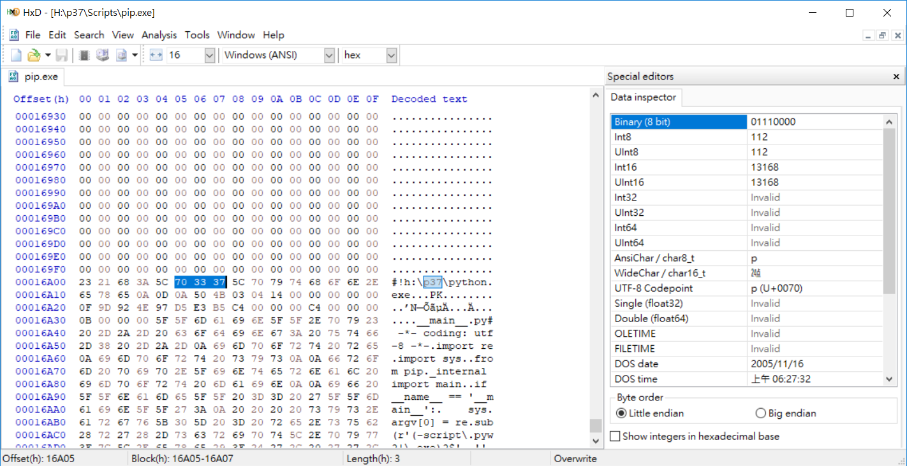
4.修改為y:\p37\python.exe 。
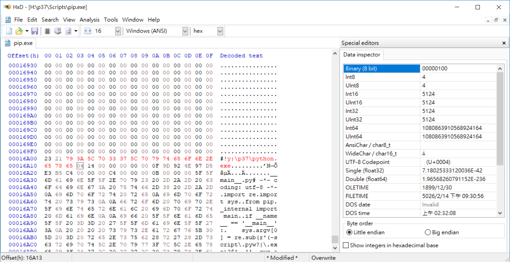
5.下載SciTe編輯器。
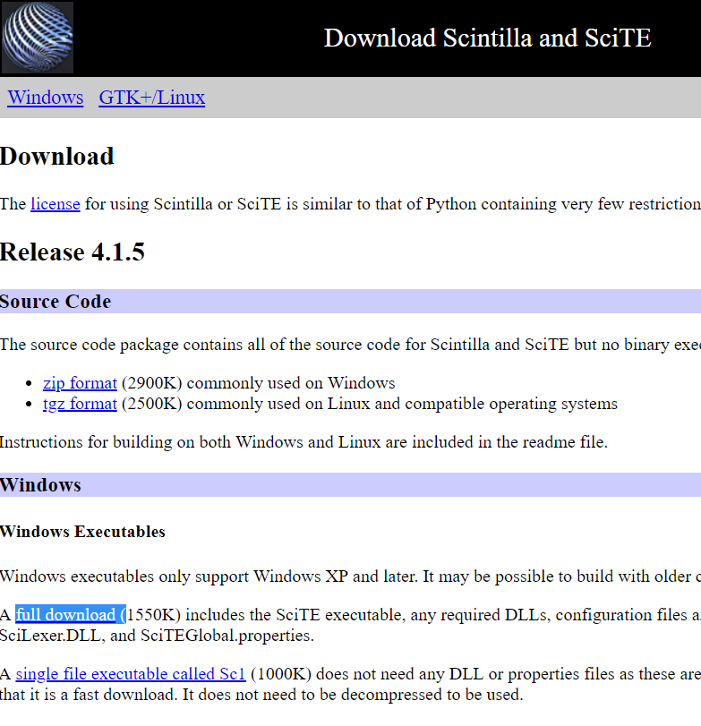
6.到選項的Global options file裡更改。
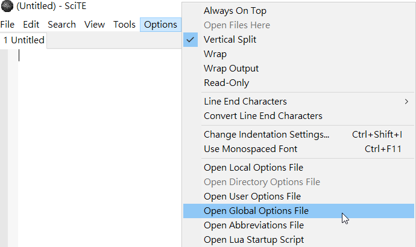
7.用快捷ctrl+f ，打上code.page。
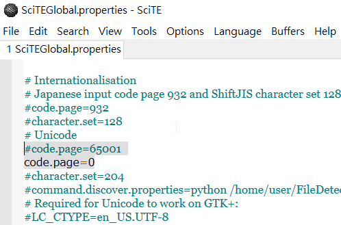
8.將65001的部分設定為開啟，將code.page=0的前方打上#即可關閉。
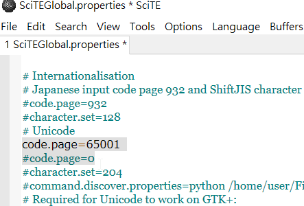
9.將突下反白的部分新增上去即可，完成我們所需要的start.bat的批次檔。
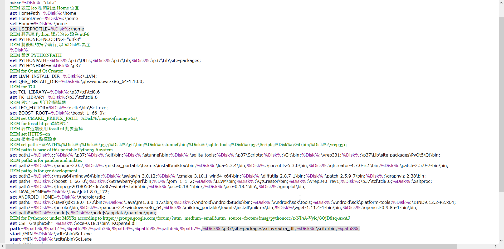
10.圖下為stop.bat的批次檔。
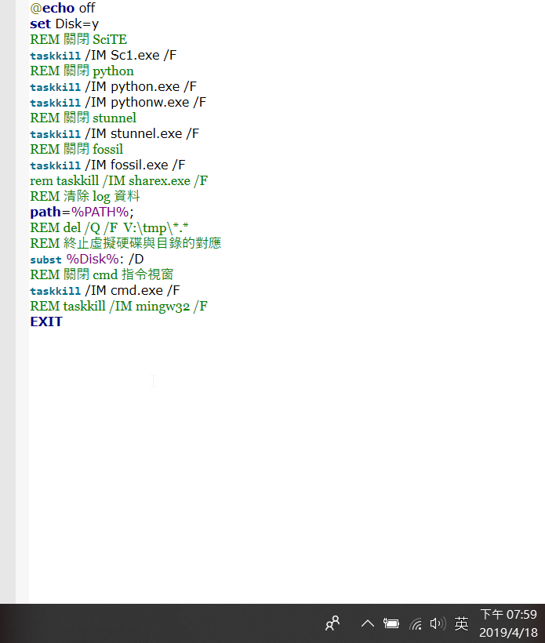
--------------------------------------------------------------------------
Week3 to Week4
如何使用 ungit 進行檔案推送及版本的推還確認
1.先在y的home內部進行user config綁定


2.到python wsgi.py動態網站更改部分的資料
3.接著開啟ungit後進行commit上傳

4.上傳後再push即可更改成功

5.到warehousing尋找commit recond

如何運用ungit回推版本:
1.先開啟ungit，並將某一個歷程編上tag

2.使用指令 git checkout 到所要的歷程，如下圖是到expw4-18，再開啟python wsgi.py確定是否回歸到版本。

3.接著回到當前版本需要使用指令 git checkout -- config/content.htm ， 接著用git checkout delprogress回到當前版本。

4.再次回到python wsgi.py內察看是否回到當前版本。

-------------------------------------------------------------------
Week5 to Week6
步驟連結:http://www.coppeliarobotics.com/helpFiles/en/bubbleRobTutorial.htm
手作影片https://www.youtube.com/watch?v=4M96bKCxg6o&feature=youtu.be
-------------------------------------------------------------
Week7 to Week8
tutorial connected:
http://www.coppeliarobotics.com/helpFiles/en/buildingAModelTutorial.htm
By the way: V-REP支持目前以下CAD數據格式：OBJ，STL，DXF，3DS（僅限Windows）和Collada。URDF也受支持，它不是純粹的基於網格的文件格式。
模擬如下:


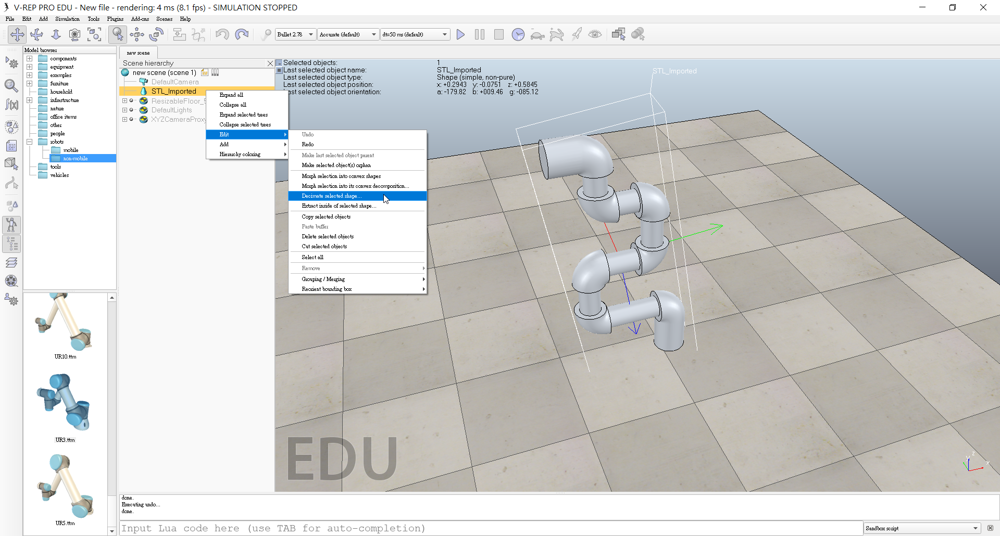

-------------------------------------------------------
Week9
影片: https://www.youtube.com/watch?v=CwPbQCqIA3Q&feature=youtu.be
---------------------------------------------------------------
Week10
操作影片: https://www.youtube.com/watch?v=0DXHADGwYJo&t=29s
https://www.youtube.com/watch?v=-U-x7uPzyTY&feature=youtu.be
Learning Progress << Previous Next >> Week11 to Week17